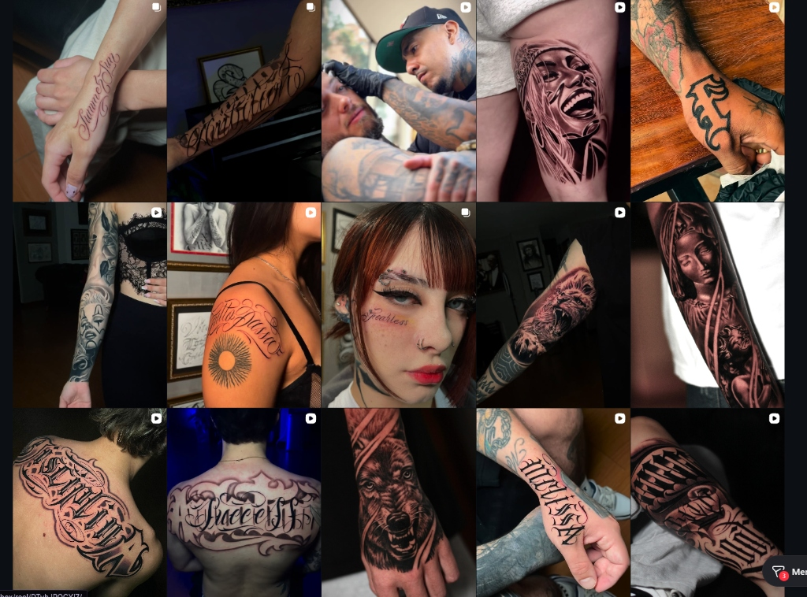
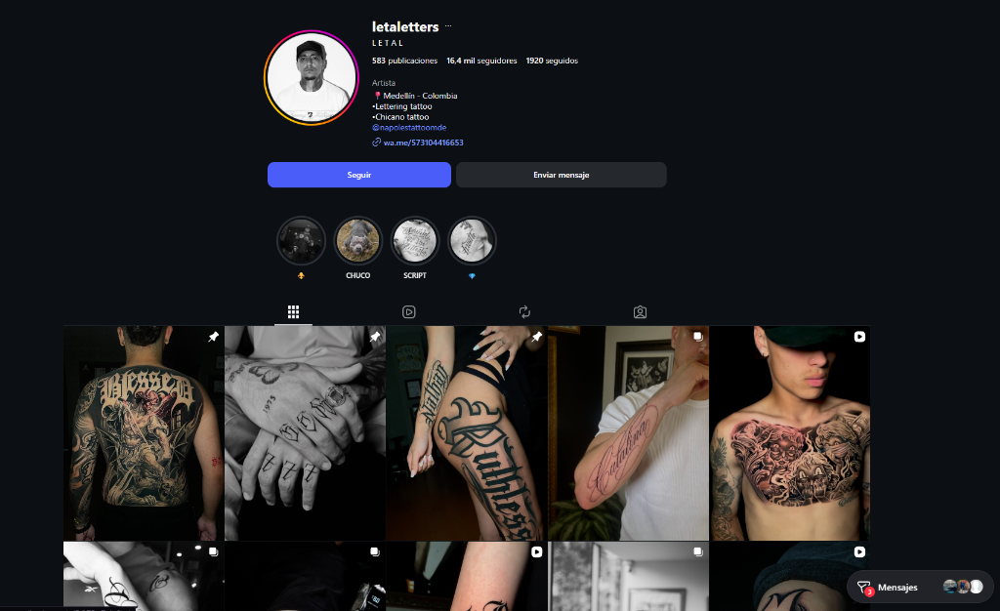

No tatuamos piel. Marcamos permanencia.
Estudio privado de autor en El Poblado con 6 artistas residentes.
El Templo de la Tinta Eterna
No vendemos servicios comerciales. Marcamos pactos irrevocables entre la piel, la disciplina y la memoria. Nápoles Tattoo nace del encuentro entre la nobleza del mármol clásico y el código de lealtad del barrio fino.
Lealtad
La palabra dada en el templo
se sella en sangre y tinta.
No tratamos con clientes pasajeros; forjamos hermandad. Respeto inquebrantable por el portador, por el linaje del tatuador y por la historia que quedará grabada sin retorno.
Disciplina
Cada trazo exige la precisión
implacable del cincel sobre mármol.
Cero atajos comerciales. Cero modas desechables. Higiene quirúrgica y un dominio técnico obsesivo en cada aguja, sombra y contraste.
Permanencia
Creamos monumentos sobre la piel
para acompañar al hombre hasta la tumba.
El arte efímero pertenece a las masas. En Nápoles esculpimos obras que desafían el envejecimiento y trascienden el tiempo.
"Nápoles Tattoo es el santuario privado donde la calle,
el mármol clásico y el honor se transforman en arte inmortal."
Símbolo & Heráldica Oficial
El sello oficial N/T: fondo blanco circular, doble ribete negro y las iniciales caligráficas cruzadas a 45 grados en un equilibrio perfecto de poder.
Paleta Cromática & Sistema 60-30-10
Sistema cromático de 5 colores presentado en medallones heráldicos. Cada tono tiene función de interfaz y porcentaje de ocupación visual estricto para garantizar legibilidad, contraste WCAG y jerarquía de conversión.
#0B080A · Base 60%#EFE6E4 · Texto 25%#3D3A3B · Soporte 5%#8E111D · CTA 7%#C8A664 · Lujo 3%- Texto en Marble Bone (#EFE6E4) sobre Obsidian Void (#0B080A): Contraste perfecto.
- Botón en Baroque Wine (#8E111D) con texto Bone en píldora: Cero fatiga visual.
- Bordes de medallones en 1px Baroque Gold (#C8A664): Separación sacra y nítida.
- Obsidian Ash (#3D3A3B) para tipografía atmosférica y textos de soporte sobre Void.
- Prohibido cajas rectangulares duras para encerrar colores o fotografías.
- Prohibido fondos blancos puros (#FFFFFF) o grises claros en cualquier sección.
- Prohibido usar Baroque Wine en textos de más de 3 palabras.
- Prohibido usar Obsidian Ash como color de texto principal — solo atmósfera.
Sistema Tipográfico Oficial
Tríada jerárquica de Nápoles Tattoo Studio: la solemnidad del Gótico Sacro, la actitud del Chicano Lettering y la pulcritud del diseño editorial contemporáneo.
Cabeceras principales H1, portadas de piezas editoriales y nombre oficial de la marca.
Nunca en bloques densos de lectura continua ni párrafos explicativos.
Subtítulos H2/H3, números de comunicado oficial, frases de poder y nombres de artistas.
Nunca en textos corridos de más de dos líneas.
Párrafos editoriales, fichas de cuidados post-tattoo, descripciones anatómicas y toda la interfaz web.
Garantiza una lectura descansada, premium y de alta gama sin perder el carácter de culto.
UI Kit & Formas de Culto
Arquitectura de componentes basada en arcos de catedral barroca, medallones circulares y siluetas en píldora. Cero rectángulos genéricos.
border-radius: 100px; en todos los botones interactivos para una ergonomía suave y de alta gama.
border-radius: 80px 80px 14px 14px), evocando las hornacinas y ventanales de las catedrales clásicas.- Ribete dorado de 1px en Baroque Gold (#C8A664).
- Botón inferior en píldora completa.
Explorador Anatómico & Reserva
Selecciona la zona en el maniquí y completa tu agendamiento en 4 pasos rápidos y cómodos.
Pecho & Esternón


Aplicaciones de Marca & Merchandising Real
Soportes oficiales: tarjetería mate de alta gama con el fondo de ángeles neoclásicos B&W visible, y el kit de indumentaria oficial con parche bordado N/T.
Sistema de Fotografía & Dirección Visual
Estándares estrictos de fotografía para el catálogo web y redes sociales. Nápoles Tattoo se posiciona como una galería de arte sacro contemporáneo: cada imagen debe transmitir valor monumental y rigor quirúrgico.
- ✔ Iluminación Polarizada: Luz de estudio con filtro polarizador CPL para eliminar el 100% de los brillos blancos sobre la tinta fresca.
- ✔ Fondos Neutros y Arquitectura: Piel expuesta sobre fondo negro puro, piedra mármol o las instalaciones del estudio en El Poblado.
- ✔ Composición Limpia: Encuadres directos, ortogonales o macros que destaquen la nitidez de línea (calibre 0.35mm) y el degradado de sombras.
- ✔ Tratamiento de Piel: Piel limpia, desinflamada y lubricada con capa ultra-fina mate (cero exceso de vaselina aceitosa).
- ✖ Flash Directo de Móvil: Prohibido tomar fotos con el flash directo del celular que queme la textura de la piel y cause destellos ciegos.
- ✖ Fondos Sucios de Taller: Prohibido mostrar toallas con manchas de tinta, campos quirúrgicos arrugados o botes de basura en el fondo.
- ✖ Filtros de Redes Sociales: Cero filtros distorsionadores, grano artificial de TikTok o stickers promocionales sobre la fotografía.
- ✖ Tomas Inclinadas / Borrosas: Cero fotografías desenfocadas, con baja resolución o con encuadres diagonales amateur.
Usos Incorrectos del Logotipo & Marca
Reglas no negociables para preservar la autoridad, solemnidad y valor comercial del símbolo oficial de Nápoles Tattoo.
Prohibido alterar la proporción de aspecto (estirar horizontal o verticalmente).
Prohibido aplicar tintes neón, azules, verdes o degradados ajenos a la paleta.
Prohibido montar el logo sobre fondos saturados sin contraste o con interferencia visual.
El eje heráldico N/T debe permanecer siempre a 0° de inclinación.
Prohibido aplicar biseles, sombras duras o relieves artificiales de Photoshop.
Solo las 3 fuentes oficiales normadas pueden acompañar al símbolo.
Galería Selecta de Obras
Una muestra de las disciplinas que definen la excelencia de Nápoles Tattoo.
Protocolo Post-Tattoo de Nápoles
Garantizamos la permanencia de cada obra siguiendo estas reglas clínicas.
Voz, Tono & Manifiesto de Culto
Cómo habla Nápoles Tattoo en Instagram, en la web y en la calle: directo, frío, leal, sin rodeos y con peso. Cero lenguaje de agencia publicitaria; puro respeto de estudio privado.
Lealtad Antes Que Tinta.
El Barrio Se Lleva En La Piel.
Arte Que No Pide Permiso.
- ✦ Directos & Sobrios: Hablamos claro, con pocas palabras pero de peso.
- ✦ Barrio Fino & Honor: Respeto mutuo y orgullo de pertenencia.
- ✦ Cirujanos de la Tinta: Rigor clínico y maestría técnica absoluta.
- ✦ Culto & Nobleza: Tratamos cada pieza como una reliquia sagrada.
- ✖ No somos fresas: Cero lenguaje empalagoso ni postureo falso.
- ✖ No somos tienda de rebajas: Cero 2x1, cero combos ni regateo.
- ✖ No somos academia estirada: Cero tecnicismos aburridos sin calle.
- ✖ No somos masivos: Cero atención apresurada ni tatuajes de catálogo.